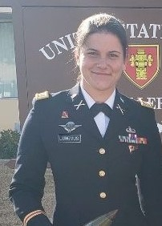

Ruijia Liu is a current MPP student at Harvard Kennedy School. Before coming to HKS, she worked at a legal aid institution.
Yixian Xu is a master student from HGSE with a background in both psychology and sociology.
Kate Lungmus has worked for the U.S. Department of Defense for 12 years as an artillery officer leading cannon, rocket, and missile formations. She is a MC/MPA student at Harvard Kennedy School. Upon graduation, she will become a strategic advisor on the Army Staff at the Pentagon in Washington, DC.
Dasol Shim has worked for the ROK Ministry of Foreign Affairs for 7 years and has served in ROK Embassy, PRC. She is currently an MPP student at Harvard Kennedy School.